logP and logD calculation
- Introduction
- Symbols
- Definition of Partition Coefficient P and Distribution Coefficient D
- Example
- Micro Partition Coefficient
- Relation Between Macro and Micro Partition Coefficients
- Examples
- References
1. Introduction
The mass flux of a molecule at the interface of two immiscible solvents is governed by its lipophilicity.
The more lipophilic a molecule is, the more soluble it is in lipophilic organic phase.
For the same reason, drug penetration into a biological membrane is also influenced by its lipophilicity.
When a molecule is ionizable at solution pH, it can form a more hydrophilic anion or cation and subsequently
fails to dissolve in organic phase. Ionization of a molecule leads to the accumulation of the hydrophilic form
in aqueous phase. In contrast, its lipophilic form will decrease in both aqueous and in organic phase
due to the law of conservation of mass.
The partition coefficient of a molecule that is observed between water and n-octanol has been adopted as the standard measure of lipophilicity.
The observed partition coefficient depends on the support electrolyte concentration of the bulk phase the compound is dissolved in.
Extra ion-pair forming chemical agents added to the aqueous/organic phase may have a significant effect
on the partitioning behavior of a molecule.
It is often meaningful to obtain the partition coefficients of molecules by calculation.
The molecular structure and extent of ionization are the primary factors in calculating the partition coefficient.
The standard partition coefficient of ionized and unionized species is calculated from the molecular structure is
based largely on the atomic logP increments given in Ref.1.
The extent of ionization at a given pH is obtained from the predicted pKa of a molecule.
Our calculation method does not take into account the effect of ion-pair formation on either logD or logP.
2. Symbols
Throughout this document we use the following symbols.
Pi (upper case) is the macro partition coefficient,
where subscript i refers to the ionization state of species included in Pi. e.g. i= -2, -1, 0, +1, +2
pi (lower case) is the micro partition coefficient,
where subscript i refers to the microspecies. e.g. i=1,2,3,4,…
D is the distribution coefficient
[ ] is the concentration of microspecies
logP is the logarithm of the partition coefficient
logD is the logarithm of the distribution coefficient
3. Definition of Partition Coefficient P and Distribution Coefficient D
The partition coefficient is the ratio of the concentration of the compound in octanol to the concentration of the compound in water.
The distribution coefficient is the ratio of the sum of the concentrations of all species of the
compound in octanol to the sum of the concentrations of all species of the compound in water.
Based on acid dissociation reactions, we can introduce the concept of a partition coefficient
for cationic and anionic species and for neutral species.
The following gives the definition of partition and distribution coefficients
for ionized and unionized species.
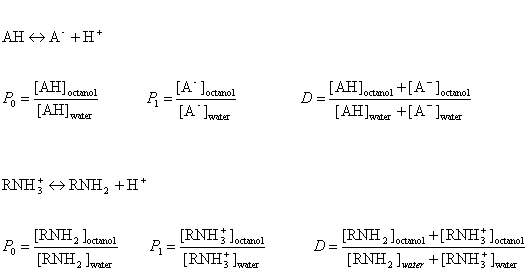
The partition and distribution coefficients for multiprotic compounds are defined in much the same way as for monoprotic compounds, using the following formulas.
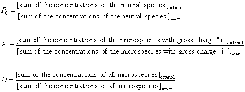
4. Example
In this example we suppose that the compound A1A2B1B2 contains two acidic and two basic ionization sites.
This compound has 16 protonation states in aqueous solution. The microspecies which are assigned to the protonation states
are summarized in
table 1.
Table 1.
| Microspecies |
charge |
| A1A2B1B2 |
0 |
| A1-A2B1B2 |
-1 |
| A1A2-B1B2 |
-1 |
| A1A2B1+B2 |
+1 |
| A1A2B1B2+ |
+1 |
| A1-A2-B1B2 |
-2 |
| A1-A2B1+B2 |
0 |
| A1-A2B1B2+ |
0 |
| A1A2-B1+B2 |
0 |
| A1A2-B1B2+ |
0 |
| A1A2B1+B2+ |
+2 |
| A1-A2-B1+B2 |
-1 |
| A1-A2-B1B2+ |
-1 |
| A1-A2B1+B2+ |
+1 |
| A1A2-B1+B2+ |
+1 |
| A1-A2-B1+B2+ |
0 |
Partition coefficients and distribution coefficients are expressed by the following formulas:
1. Partition coefficient of the neutral species
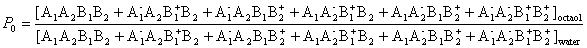
2. Partition coefficient of the anionic and the cationic species
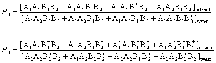
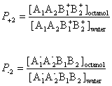
3. The distribution coefficient of the A1A2B1B2 molecule
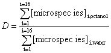
5. Micro Partition Coefficient
It is possible to define the theoretical micro partition coefficient.
The micro partition coefficient is the ratio of the concentration of two microspecies defined with pi
as expressed with the next relation.
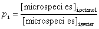
6. Relation Between Macro and Micro Partition Coefficients
Macro partition coefficients P0…Pi
can also be expressed as a function of micro partition coefficients p0…pi.
From the definition of micro partition coefficients, we obtain the following formula for the concentration of microspecies in octanol:
[microspecies ] i,octanol = pi*[microspecies ] i,water
where pi is the micro partition coefficient of microspecies i.
For example, P-1 includes four micro partition coefficients
( p1, p2, p3 , p4 ).
They are given by:
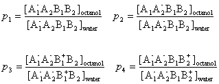
After substituting the pi's into the original formula for P-1 we get a the following simpler formula,
which includes only aqueous concentration of the appropriate microspecies.
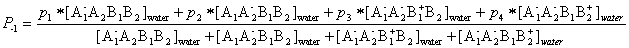
This can be further simplified if we introduce the acid dissociation constants of the
A1A2B1B2 molecule.
The next five ionization reactions of the A1A2B1B2
molecule are used to rearrange P-1 into a concentration free form.
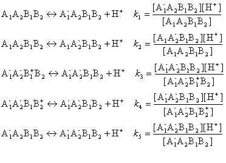
So we can further simplify the formula for P-1 to the following.
This expression reveals that P-1 does not depend on the solution pH.
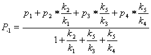
Similarly, one could show that
P0, P+1, P-2
and P+2 are also pH-independent.
In contrast to this, the distribution coefficient D does depend on the solution pH. See Ref. 2.
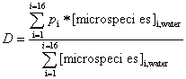
7. Examples
Example 1.
The compound below is a double zwitterionic that looks like
the A1A2B1B2 molecule in the theoretical section above. Lipophilicity of this compound reaches its maximum twice, near each of the izoelectronic points.
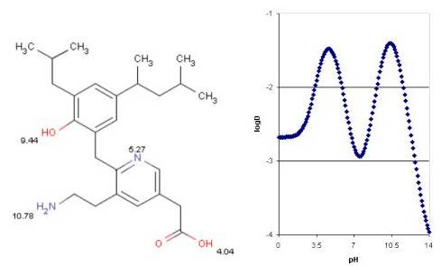
Example 2.
Homidium is a quaternary ammonium ion with strong hydrophilic character.
Its logP is calculated with the use of the ionic fragment of the N+ ion.
The calculated and observed logP agree.
|
Calculated logP = -1.09 |
observed logP= -1.10 |
see Ref. 3. |
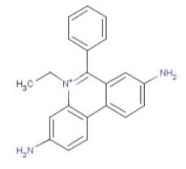
Example 3.
Ibuprofen has the typical logD-pH profile that is characteristic of acidic compounds.
Lipophilic behavior of ibuprofen will be dominant when its carboxylic group is unionized,
which occurs at lower pH.
At higher pH the carboxylic group reaches the fully ionized
state and hydrofilicity becomes enhanced.
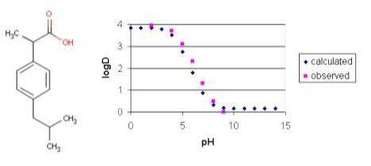
Example 4.
The measured distribution coefficient also depends on the observation method.
The shake flask and the pH-metric methods are the most popular.
The figure below shows the observed and calculated logD of
lignocaine as function of pH.
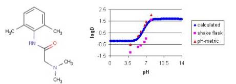
References
- Viswanadhan, V. N.; Ghose, A. K.; Revankar, G. R. and Robins, R. K., J.Chem.Inf.Comput.Sci., 1989, 29, 3, 163-172
- Csizmadia, F.; Tsantili-Kakoulidou, A.; Panderi, I. and Darvas, F., J.Pharm.Sci., 1997, 86, 7, 865-871
- Bouchard, G.; Carrupt, P. A.; Testa, B.; Gobry, V. and Girault, H. H., Pharm.Res., 2001, 18, 5, 702-708